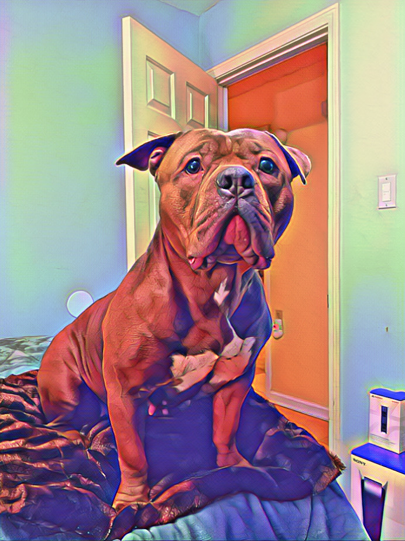
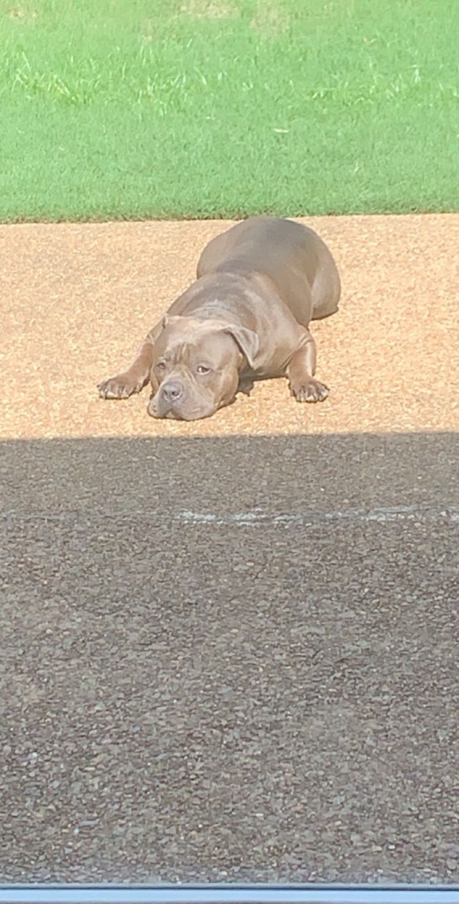

## Welcome to GitHub Pages
You can use the [editor on GitHub](https://github.com/Cbp331/pet/edit/gh-pages/index.md) to maintain and preview the content for your website in Markdown files.
Whenever you commit to this repository, GitHub Pages will run [Jekyll](https://jekyllrb.com/) to rebuild the pages in your site, from the content in your Markdown files.
Daisy in her natural habitat.
Mean Mugging

Daisy is always trying to jump on the bed.
Once she gets on the bed she likes to attack me and runs towards me.
Chilling
In this pictue she was chiling right before the SuperBowl.
Sleeping
Daisy likes it when we rub her tummy, while shes asleep.
Sun Bathing

Caught her sun bathing, she enjoys going out there!
Her favortie things to do:
Play with her tennis ball
She likes to pretend to attack us
Eat our food
go on walks
bite up things around the house.
Her Favorite Websites to shop on
Chewy store
nike clothes
look up foods recipes that she likes
shop for shoes
### Markdown
Markdown is a lightweight and easy-to-use syntax for styling your writing. It includes conventions for
```markdown
Syntax highlighted code block
# Header 1
## Header 2
### Header 3
- Bulleted
- List
1. Numbered
2. List
**Bold** and _Italic_ and `Code` text
[Link](url) and 
```
For more details see [Basic writing and formatting syntax](https://docs.github.com/en/github/writing-on-github/getting-started-with-writing-and-formatting-on-github/basic-writing-and-formatting-syntax).
### Jekyll Themes
Your Pages site will use the layout and styles from the Jekyll theme you have selected in your [repository settings](https://github.com/Cbp331/pet/settings/pages). The name of this theme is saved in the Jekyll `_config.yml` configuration file.
### Support or Contact
Having trouble with Pages? Check out our [documentation](https://docs.github.com/categories/github-pages-basics/) or [contact support](https://support.github.com/contact) and we’ll help you sort it out.